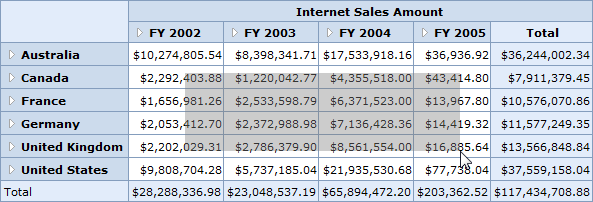

This feature allows you to select a specific range of value cells and display them in a simple chart.
Tables for Properties and Events
Properties
|
Properties |
Description |
Type |
Data Type |
|
EnableCellSelection |
This property allows value cell selection on mouse drag. |
Server side |
Boolean |
Events
|
Event |
Description |
Arguments |
Type |
|
CellSelection |
This event would be raised as soon as the selection process is over, that is, when the mouse eft click is released. |
CellSelectionEventArg contains a collection of PivotCellDescriptor, which is nothing but the detail of the selected cells. |
Server side |
Adding Cell Selection to an Application
If you want to add a cell selection feature to the application, use following code snippet:
|
[C#] // Enabling Cell Selection this.OlapGrid1.EnableCellSelection = true;
// Event raised on Cell Selection this.OlapGrid1.CellSelection += new OlapGrid.RaiseCellSelectionMouseHandler(OlapGrid1_CellSelection); |
|
[VB] ' Enabling Cell Selection Me.OlapGrid1.EnableCellSelection = True
// Event raised on Cell Selection AddHandler OlapGrid1.CellSelection, AddressOf OlapGrid1_CellSelection |

Figure 32: Cell Selection and Displaying them in a Simple Chart
Sample Link
A demo is available at the following link:
..\Syncfusion\EssentialStudio\<VersionNumber>\BI\Web\OlapGrid.Web\Samples\3.5\Application Scenario\ CellSelectionDemo